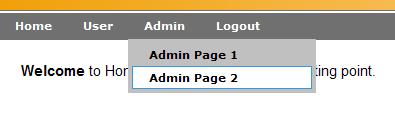

org.apache.click.control.AbstractControl
org.apache.click.extras.control.Menu
org.apache.click.control.AbstractControl
org.apache.click.extras.control.Menu
|
|||||||||
| PREV CLASS NEXT CLASS | FRAMES NO FRAMES | ||||||||
| SUMMARY: NESTED | FIELD | CONSTR | METHOD | DETAIL: FIELD | CONSTR | METHOD | ||||||||
java.lang.Object
public class Menu
Provides a hierarchical Menu control.
|  |
<?xml version="1.0" encoding="UTF-8" standalone="yes"?>
<menu>
<menu label="Home" path="user/home.htm" roles="tomcat, role1"/>
<menu label="User" path="user/home.htm" roles="tomcat, role1">
<menu label="User Page 1" path="user/user-1.htm" roles="tomcat, role1"/>
<menu label="User Page 2" path="user/user-2.htm" roles="tomcat, role1"/>
</menu>
<menu label="Admin" path="admin/admin-1.htm" roles="role1">
<menu label="Admin Page 1" path="admin/admin-1.htm" roles="tomcat, role1"/>
<menu label="Admin Page 2" path="admin/admin-2.htm" roles="tomcat, role1"/>
</menu>
</menu>
Use a MenuFactory to load the Menu items and include the root menu
item in your page:
public class BorderPage extends Page {
private Menu rootMenu;
public BorderPage() {
MenuFactory menuFactory = new MenuFactory();
rootMenu = menuFactory.getRootMenu();
addControl(rootMenu);
}
@Override
public String getTemplate() {
return "/border-template.htm";
}
}
public class BorderPage extends Page {
private static class Menu rootMenu;
public BorderPage() {
if (rootMenu == null) {
rootMenu = new MenuBuilder().buildMenu();
}
addControl(rootMenu);
}
}
public class MenuBuilder() {
public Menu buildMenu() {
Menu rootMenu = new Menu("rootMenu");
rootMenu.add(createMenu("Home", "home.htm"));
Menu customerMenu = createMenu("Home", "home.htm");
rootMenu.add(customerMenu);
customerMenu.add(createMenu("Search Customers", "search-customers.htm"));
customerMenu.add(createMenu("Edit Customer", "edit-customer.htm"));
...
return rootMenu;
}
private Menu createMenu(String label, String path) {
Menu menu = new Menu();
menu.setLabel(label);
menu.setPath(path);
menu.setTitle(label);
return menu;
}
}
$rootMenu
The hierarchical Menu structure is rendered as an HTML list: <ul>.
Alternatively, you can render the menu using a Velocity #macro or Velocity
code in your template. For example:
#writeMenu($rootMenu)An example menu Velocity macro is provided below:
#macro( writeMenu $rootMenu ) <table id="menuTable" border="0" width="100%" cellspacing="0" cellpadding="0" style="margin-top: 2px;"> <tr> <td> <div id="searchbar"> <div class="menustyle" id="menu"> <ul class="menubar" id="dmenu"> #foreach ($topMenu in $rootMenu.children) #if ($topMenu.isUserInRoles() || $topMenu.isUserInChildMenuRoles()) #if ($topMenu.children.empty) <li class="topitem">$topMenu</li> #else <li class="topitem">$topMenu <ul class="submenu" #foreach ($subMenu in $topMenu.children) #if ($subMenu.isUserInRoles()) ><li>$subMenu</li #end #end ></ul> </li> #end #end #end #if ($request.remoteUser) <li class="topitem"><a href="$logoutLink.href">Logout</a></li> #end </ul> </div> </div> </td> </tr> </table> #endThis example uses role path based security to only display the menu items the user is authorized to see. If you are not using this security feature in your application you should remove the macro
isUserInRoles() checks so
the menu items will be rendered.
Note individual menu items will render themselves as simple anchor tags using
their toString() method. For more fine grain control you should
extend your Velocity macro to render individual menu items.
isUserInRoles()
method. When creating secure menus define the valid roles in the menu items.
For example:
<?xml version="1.0" encoding="UTF-8" standalone="yes"?>
<menu>
<menu label="Home" path="user/home.htm" roles="user,admin">
<menu label="Home" path="user/home.htm" roles="user,admin"/>
<menu label="Search" path="user/search.htm" roles="user,admin"/>
</menu>
<menu label="Admin" path="admin/admin.htm">
<menu label="Home" path="admin/admin.htm" roles="admin"/>
</menu>
</menu>
The underlying implementation of isUserInRoles() method is provided by an
AccessController interface. The default AccessController is provided
by the RoleAccessController which uses the JEE container is user in
role facility. By providing your own AccessController you can have menu
access control using other security frameworks such as Spring
Security (Acegi) or Apache Shiro.
<!-- The Menu (menu.xml) Document Type Definition. --> <!ELEMENT menu (menu*)> <!ATTLIST menu id ID #IMPLIED> <!ATTLIST menu name CDATA #IMPLIED> <!ATTLIST menu label CDATA #IMPLIED> <!ATTLIST menu path CDATA #IMPLIED> <!ATTLIST menu target CDATA #IMPLIED> <!ATTLIST menu title CDATA #IMPLIED> <!ATTLIST menu imageSrc CDATA #IMPLIED> <!ATTLIST menu external (true|false) "false"> <!ATTLIST menu separator (true|false) "false"> <!ATTLIST menu roles CDATA #IMPLIED> <!ATTLIST menu pages CDATA #IMPLIED>The Menu DTD is also published online at http://click.apache.org/dtds/menu-2.2.dtd.
AccessController,
Serialized Form| Field Summary | |
|---|---|
protected AccessController |
accessController
The menu security access controller. |
protected List<Menu> |
children
The list of submenu items. |
protected static String |
DEFAULT_CONFIG_FILE
The menu configuration filename: "/WEB-INF/menu.xml". |
protected boolean |
external
The menu path is to an external page flag, by default this value is false. |
protected String |
imageSrc
The image src path attribute. |
protected String |
label
The menu display label. |
protected List<String> |
pages
The list of valid page paths. |
protected String |
path
The menu path. |
protected List<String> |
roles
The list of valid role names. |
protected static Menu |
rootMenu
The cached root Menu as defined in menu.xml. |
protected boolean |
separator
The menu separator flag. |
protected String |
target
The target attribute. |
protected String |
title
The tooltip title attribute. |
| Fields inherited from class org.apache.click.control.AbstractControl |
|---|
actionListener, attributes, behaviors, headElements, listener, listenerMethod, messages, name, parent, styles |
| Fields inherited from interface org.apache.click.Control |
|---|
CONTROL_MESSAGES |
| Constructor Summary | |
|---|---|
|
Menu()
Create a new Menu instance. |
protected |
Menu(Element menuElement,
AccessController accessController)
Deprecated. use MenuFactory.buildMenu(org.w3c.dom.Element, org.apache.click.extras.security.AccessController, java.lang.Class)
instead |
|
Menu(String name)
Create a new Menu instance with the given name. |
| Method Summary | |
|---|---|
Menu |
add(Menu menu)
Add the given menu as a submenu. |
protected boolean |
canRender(Menu menu,
int depth)
Return true if the given menu can be rendered, false otherwise. |
boolean |
contains(Menu menu)
Return true if this menu contains the given menu, false otherwise. |
Menu |
findRootMenu()
Find the root menu, or null if no root menu can be found. |
AccessController |
getAccessController()
Return the menu access controller. |
List<Menu> |
getChildren()
Return list of of submenu items. |
List<Element> |
getHeadElements()
Return the Menu HEAD elements to be included in the page. |
String |
getHref()
Return the menu anchor HREF attribute. |
String |
getImageSrc()
Return the image src path attribute. |
String |
getLabel()
Return the menu item display label. |
List<String> |
getPages()
Return the list of valid Page paths for the Menu item. |
String |
getPath()
Return the path of the Menu item. |
List<String> |
getRoles()
Return the list of roles for the Menu item. |
static Menu |
getRootMenu()
Deprecated. use MenuFactory.getRootMenu() instead |
static Menu |
getRootMenu(AccessController accessController)
Deprecated. use MenuFactory.getRootMenu(org.apache.click.extras.security.AccessController)
instead |
Menu |
getSelectedChild()
Return the selected child menu, or null if no child menu is selected. |
String |
getTarget()
Return the target attribute of the Menu item. |
String |
getTitle()
Return the 'title' attribute of the Menu item, or null if not defined. |
boolean |
hasChildren()
Return true if the menu contains any child submenus. |
boolean |
hasRoles()
Return true if the menu has roles defined, false otherwise. |
boolean |
isExternal()
Return true if the menu path refers to an external resource. |
boolean |
isRoot()
Return true if this is the root menu, false otherwise. |
boolean |
isSelected()
Return true if the Menu item is selected. |
boolean |
isSeparator()
Return true if the Menu item is a separator. |
boolean |
isUserInChildMenuRoles()
Return true if any child menus have the user in one of their menu roles. |
boolean |
isUserInRoles()
Return true if the user is in one of the menu roles, or if any child menus have the user in one of their menu roles. |
protected static Menu |
loadRootMenu(AccessController accessController)
Deprecated. use MenuFactory.loadFromMenuXml(java.lang.String, java.lang.String, org.apache.click.extras.security.AccessController, java.lang.Class)
instead |
void |
onDestroy()
This sets the parent to be null. |
void |
render(HtmlStringBuffer buffer)
Render an HTML representation of the Menu. |
protected void |
renderMenuHref(HtmlStringBuffer buffer)
Render the menu "href" attribute. |
protected void |
renderMenuLink(HtmlStringBuffer buffer,
Menu menu)
Render an HTML link (<a>) representation of the given menu. |
protected void |
renderMenuList(HtmlStringBuffer buffer,
Menu menu,
int depth)
Render an html representation of the menu list (<ul>) structure. |
protected void |
renderMenuListAttributes(HtmlStringBuffer buffer,
Menu menu,
int depth)
Render the attributes of the menu list (>ul<). |
protected void |
renderMenuListItemAttributes(HtmlStringBuffer buffer,
Menu menu,
int depth)
Render the attributes of the menu list item (>li<). |
protected void |
renderRootMenu(HtmlStringBuffer buffer)
Render an HTML representation of the root menu. |
protected void |
renderSeparator(HtmlStringBuffer buffer,
Menu menu)
Render an HTML representation of the menu as a separator. |
void |
setAccessController(AccessController accessController)
Set the menu access controller. |
void |
setExternal(boolean value)
Set whether the menu path refers to an external resource. |
void |
setImageSrc(String src)
Set the image src path attribute. |
void |
setLabel(String label)
Set the label of the Menu item. |
void |
setPages(List<String> pages)
Set the list of valid Page paths. |
void |
setPath(String path)
Set the path of the Menu item. |
void |
setRoles(List<String> roles)
Set the list of valid roles for the Menu item. |
void |
setSeparator(boolean separator)
Set whether the Menu item is a separator. |
void |
setTarget(String target)
Set the target attribute of the Menu item. |
void |
setTitle(String title)
Set the title attribute of the Menu item. |
String |
toString()
Return an HTML representation of the menu. |
| Methods inherited from class org.apache.click.control.AbstractControl |
|---|
addBehavior, addStyleClass, appendAttributes, dispatchActionEvent, getActionListener, getAttribute, getAttributes, getBehaviors, getContext, getControlSizeEst, getHtmlImports, getId, getMessage, getMessage, getMessages, getName, getPage, getParent, getStyle, getStyles, getTag, hasAttribute, hasAttributes, hasBehaviors, hasStyles, isAjaxTarget, onDeploy, onInit, onProcess, onRender, removeBehavior, removeStyleClass, renderTagBegin, renderTagEnd, setActionListener, setAttribute, setId, setListener, setName, setParent, setStyle |
| Methods inherited from class java.lang.Object |
|---|
clone, equals, finalize, getClass, hashCode, notify, notifyAll, wait, wait, wait |
| Field Detail |
|---|
protected static final String DEFAULT_CONFIG_FILE
protected static Menu rootMenu
protected transient AccessController accessController
protected List<Menu> children
protected boolean external
protected String imageSrc
toString() method.
If the image src value is prefixed with '/' then the request context path
will be prefixed to the src value when rendered by the control.
protected String label
protected List<String> pages
protected String path
protected List<String> roles
protected boolean separator
protected String target
protected String title
| Constructor Detail |
|---|
public Menu()
accessController if the
menu's isUserInRoles() method is going to be called.
Menu(java.lang.String)public Menu(String name)
accessController if the
menu's isUserInRoles() method is going to be called. For example:
public class BorderPage extends Page {
...
public void defineMenus() {
// Define an accessController
AccessController accessController = new RoleAccessController();
// Retrieve some user roles
List roles = securityService.getRoles();
Menu menu = new Menu("root");
menu.setAccessController(accessController);
menu.setRoles(roles);
Menu subMenu = new Menu("products");
subMenu.setLabel("Products");
subMenu.setAccessController(accessController);
subMenu.setRoles(roles);
menu.add(subMenu);
...
}
}
name - the name of the menu
@Deprecated
protected Menu(Element menuElement,
AccessController accessController)
MenuFactory.buildMenu(org.w3c.dom.Element, org.apache.click.extras.security.AccessController, java.lang.Class)
instead
menuElement - the menu-item XML ElementaccessController - the menu access controller| Method Detail |
|---|
@Deprecated public static Menu getRootMenu()
MenuFactory.getRootMenu() instead
RoleAccessController@Deprecated public static Menu getRootMenu(AccessController accessController)
MenuFactory.getRootMenu(org.apache.click.extras.security.AccessController)
instead
accessController - the menu access controller
public AccessController getAccessController()
public void setAccessController(AccessController accessController)
accessController - the menu access controllerpublic boolean hasChildren()
public List<Menu> getChildren()
public boolean isExternal()
public void setExternal(boolean value)
value - the flag as to whether the menu path refers to an external resourcepublic String getImageSrc()
toString() method.
If the src value is prefixed with '/' then the request context path will
be prefixed to the src value when rendered by the control.
public void setImageSrc(String src)
src - the image src path attributepublic String getLabel()
getName() + ".label"If not found then the message will be looked up in the /click-control.properties file using the same key. If a value is still not found, the Menu name will be converted into a label using the method:
ClickUtils.toLabel(String)
For example given the properties file src/click-page.properties:
customers.label=Customers customers.title=Find a specific customerThe menu.xml (note that no label attribute is present):
<?xml version="1.0" encoding="UTF-8" standalone="yes"?>
<menu>
<menu name="customers" path="customers.htm" roles="view-customers"/>
...
</menu>
Will render the Menu label and title properties as:
<li><a title="Find a specific customer" ... >Customers</a></li>When a label value is not set, or defined in any properties files, then its value will be created from the Menu name. For example given the menu.xml file:
<?xml version="1.0" encoding="UTF-8" standalone="yes"?>
<menu>
<menu name="product" path="product.htm" roles="view-product"/>
...
</menu>
Will render the Menu label as:
<li><a ... >Product</a></li>
public void setLabel(String label)
label - the label of the Menu itempublic List<String> getPages()
public void setPages(List<String> pages)
pages - the list of valid Page pathspublic String getPath()
public void setPath(String path)
path - the path of the Menu itempublic boolean hasRoles()
public List<String> getRoles()
public void setRoles(List<String> roles)
roles - the list of valid roles for the Menu itempublic boolean isSelected()
public Menu getSelectedChild()
public boolean isSeparator()
public void setSeparator(boolean separator)
separator - the flag indicating whether the Menu item is a separatorpublic boolean isUserInRoles()
AccessController#hasAccess(HttpServletRequest request, String roleName)
method where the rolenames are derived from the getRoles() property.
If no roles are defined, the AccessController are invoked
with a null argument to determine whether access is permitted to
menus without roles.
IllegalStateException - if the menu accessController is not definedpublic boolean isUserInChildMenuRoles()
getRoles() property.
public String getTarget()
public void setTarget(String target)
target - the target attribute of the Menu itempublic String getTitle()
getName() + ".title"If not found then the message will be looked up in the /click-control.properties file using the same key. If still not found the title will be left as null and will not be rendered. For example given the properties file src/click-page.properties:
customers.label=Customers customers.title=Find a specific customerThe menu.xml (note that no title attribute is present):
<?xml version="1.0" encoding="UTF-8" standalone="yes"?>
<menu>
<menu name="customers" path="customers.htm" roles="view-customers"/>
...
</menu>
Will render the Menu label and title properties as:
<li><a title="Find a specific customer" ... >Customers</a></li>
public void setTitle(String title)
title - the title attribute of the Menu itempublic String getHref()
public List<Element> getHeadElements()
getHeadElements in interface ControlgetHeadElements in class AbstractControlControl.getHeadElements()public Menu add(Menu menu)
menu - the submenu to add
public boolean contains(Menu menu)
public Menu findRootMenu()
public boolean isRoot()
public void onDestroy()
onDestroy in interface ControlonDestroy in class AbstractControlControl.onDestroy()public void render(HtmlStringBuffer buffer)
isRoot() returns true), the menu and all its submenus
(recursively), will be rendered by delegating rendering to the method
renderRootMenu.
The menu structure will be rendered as an HTML List consisting of <ul>
and <li> elements.
If this menu instance is not the root menu, this menu
will be rendered by delegating rendering to the method
renderMenuLink(org.apache.click.util.HtmlStringBuffer, org.apache.click.extras.control.Menu).
The menu will be rendered as a link: <a>.
By having two render modes one can render the entire menu
automatically, or render each menu item manually using a Velocity macro.
render in interface Controlrender in class AbstractControlbuffer - the specified buffer to render the control's output totoString()public String toString()
toString in class AbstractControlrender(org.apache.click.util.HtmlStringBuffer)protected void renderRootMenu(HtmlStringBuffer buffer)
buffer - the buffer to render to
protected void renderMenuList(HtmlStringBuffer buffer,
Menu menu,
int depth)
canRender(menu)
controls whether menu items are rendered or not. If canRender
returns true, the menu item is rendered, otherwise it is skipped.
buffer - the buffer to render tomenu - the menu that is currently rendereddepth - the current depth in the menu hierarchycanRender(org.apache.click.extras.control.Menu, int)
protected boolean canRender(Menu menu,
int depth)
has roles defined, this method will return
true if the user is in one of the menu roles, false otherwise. This method
delegates to isUserInRoles() if the menu has roles defined.
If the menu has no roles defined, this method returns true.
menu - the menu that should be rendered or notdepth - the current depth in the menu hierarchy
protected void renderMenuListAttributes(HtmlStringBuffer buffer,
Menu menu,
int depth)
buffer - the buffer to render tomenu - the menu being rendereddepth - the current depth in the menu hierarchy
protected void renderMenuListItemAttributes(HtmlStringBuffer buffer,
Menu menu,
int depth)
buffer - the buffer to render tomenu - the menu being rendereddepth - the current depth in the menu hierarchy
protected void renderMenuLink(HtmlStringBuffer buffer,
Menu menu)
buffer - the buffer to render tomenu - the menu to render
protected void renderSeparator(HtmlStringBuffer buffer,
Menu menu)
buffer - the buffer to render tomenu - the menu to render as a separatorprotected void renderMenuHref(HtmlStringBuffer buffer)
public class MyPage extends BorderPage {
public MyPage() {
Menu rootMenu = new MenuFactory().getRootMenu();
final String contextPath = getContext().getRequest().getContextPath();
Menu menu = new Menu() {
@Override
protected void renderMenuHref(HtmlStringBuffer buffer) {
buffer.appendAttribute("href", contextPath + "/my-page.htm?customer=" + getCustomerId());
}
});
menu.setName("customer");
menu.setLabel("Customer Lookup");
// Guard against adding child menu more than once
if (!rootMenu.contains(menu)) {
rootMenu.add(menu);
}
}
}
buffer - the buffer to render the href attribute to@Deprecated protected static Menu loadRootMenu(AccessController accessController)
MenuFactory.loadFromMenuXml(java.lang.String, java.lang.String, org.apache.click.extras.security.AccessController, java.lang.Class)
instead
accessController - the menu access controller
|
|||||||||
| PREV CLASS NEXT CLASS | FRAMES NO FRAMES | ||||||||
| SUMMARY: NESTED | FIELD | CONSTR | METHOD | DETAIL: FIELD | CONSTR | METHOD | ||||||||